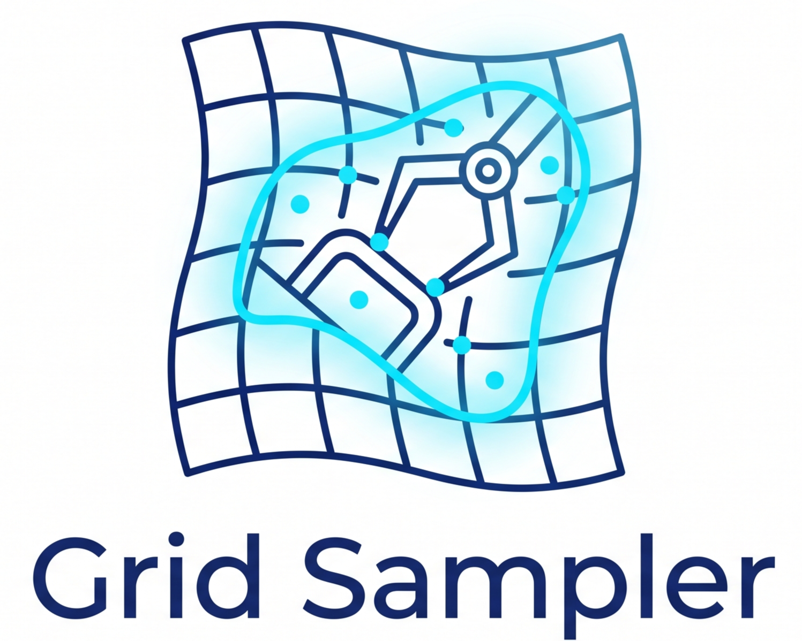
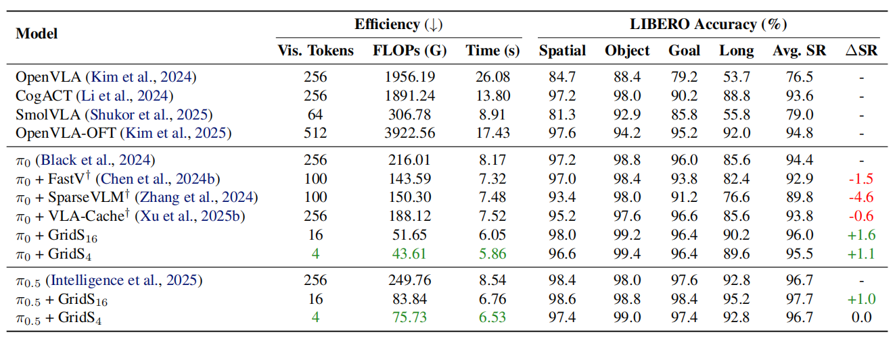
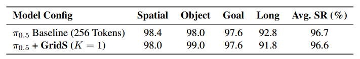
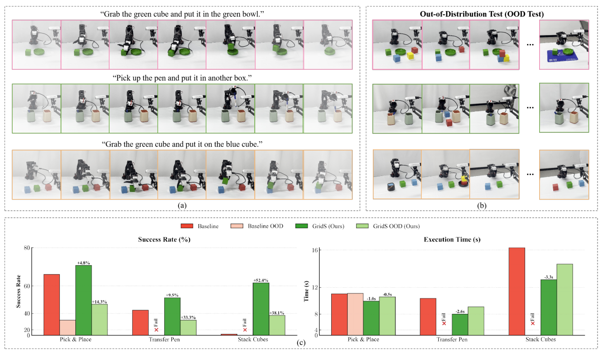
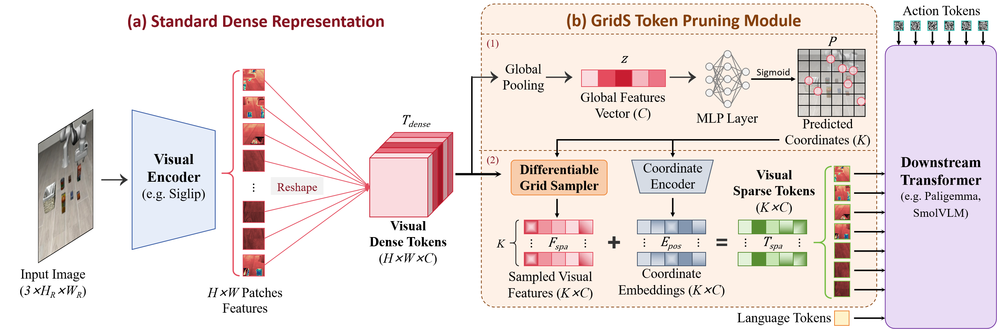
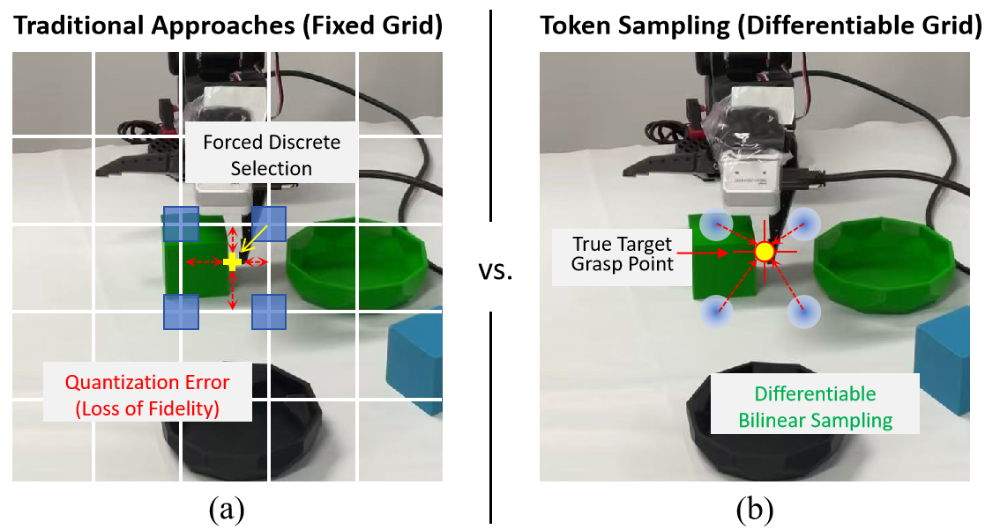
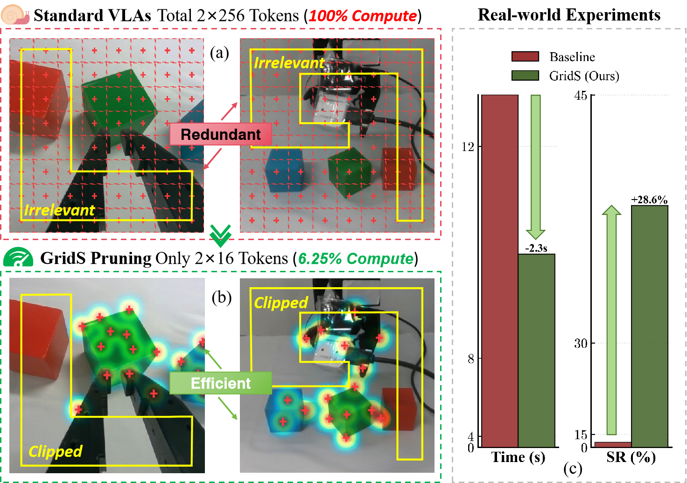

See What Matters: Differentiable Grid-Sample Pruning for Generalizable VLAs
GridS uses only 1 visual token yet matches a 256-token dense baseline.
Pen
Pick
Stack
Pen (OOD)
Pick (OOD)
Stack (OOD)

Comparison of Model Efficiency and Performance on LIBERO dataset (Liu et al., 2023). We report efficiency metrics (visual tokens, FLOPs, completion time) and success rate across different task categories. We follow VLASH (Tang et al., 2025) to calculate the average duration and steps of task completion. All efficiency calculations are evaluated on a single RTX Pro6000 GPU and in 32 language tokens. The symbol † represents the training-free pruning methods, which forced to operate post-training at test time, leading to inherent performance degradation. (We note that VLA-Cache is not strictly a pruning method, but a token-cached speeding-up method. However, since many pruning methods are also compared with it, we also provide the result here.)

Performance of GridS under the extreme sparsity constraint (K = 1) using the π0.5 backbone. Counter-intuitively, a single sampled token (a 99.6% reduction in visual input) retains sufficient information to achieve nearly identical performance compared to the dense 256-token baseline.

Real-world evaluation on the SO100 robot arm.
(a) Execution rollouts of three language-conditioned tasks: Pick & Place, Stack Cubes, and Transfer Pen.
(b) The corresponding Out-of-Distribution (OOD) test scenarios, featuring unseen distractor objects and variable spatial arrangements. We schemed 21 different OOD scenarios.
(c) Quantitative comparison of Success Rate (%) and Execution Time (s). Our proposed method, GridS, consistently outperforms the baseline across all tasks. Notably, in the challenging Stack Cubes task, GridS achieves a +52.4% increase in success rate and demonstrates superior generalization in OOD settings where the baseline frequently fails.
Overview of the GridS Token Pruning framework.
(a) Standard Dense Representation: An input image (HR and WR denote the original image resolution) is processed by a visual encoder with ViT-style embeddings (Dosovitskiy et al., 2020) to generate dense visual tokens (H × W × C), capturing full spatial details.
(b) GridS Token Pruning Module: This module identifies salient regions to sample a sparse set of visual tokens (K × C), which includes two stages: (1) Global Coordinate Prediction, and (2) Grid Sampling with Geometry Injection. By ensuring the token count is significantly smaller than the dense spatial resolution (K ≪ H × W), it achieves efficient representation for the downstream Transformer.

Vision-Language-Action (VLA) models have shown remarkable promise in robotics manipulation, yet their high computational cost hinders real-time deployment. Existing token pruning methods suffer from a fundamental trade-off: aggressive compression using pruning inevitably discards critical geometric details like contact points, leading to severe performance degradation. This forces a compromise, limiting the achievable compression rate and thus the potential speedup. We argue that breaking this trade-off requires rethinking compression as a geometry-aware, continuous token resampling in the vision encoder.
To this end, we propose the Differentiable Grid Sampler (GridS), a plug-and-play module that performs task-aware, continuous resampling of visual tokens in VLA. By adaptively predicting a minimal set of salient coordinates and extracting features via differentiable interpolation, GridS preserves essential spatial information while achieving drastic compression (with fewer than 10% of the original visual tokens). Experiments on both the LIBERO benchmark and a real robotic platform, validating the lowest feasible visual token count reported to date, show that GridS achieves a 76% reduction in FLOPs with no degradation in the success rate.
Vision-Language-Action (VLA) models demonstrate strong generalization but suffer from prohibitive computational costs due to dense visual tokens (e.g., 256 tokens per image).
Current token pruning methods attempt to solve this by discretely dropping patches over a fixed grid. However, robotic interaction requires sub-patch precision. Rigid discrete selection inevitably discards critical fine-grained geometric details (like exact contact points), causing quantization errors and severe performance drops.

Figure: Discrete grids force quantization errors, while our method ensures sub-patch fidelity.
We break the performance-efficiency trade-off by reformulating compression as a geometry-aware, continuous resampling process. Instead of being confined to a rigid output grid, GridS dynamically predicts task-driven spatial coordinates and extracts features via differentiable bilinear interpolation.
The Result: By actively localizing the most discriminative tokens, GridS operates on less than 10% of the original visual compute (e.g., just 16 tokens). It not only eliminates quantization errors but massively boosts out-of-distribution (OOD) task success rates (+28.6%) by inherently filtering out irrelevant visual noise.

Figure: GridS prunes to just 6.25% compute while drastically boosting OOD success.
Questions and issues are welcome via the repository or email.
Yixu Feng —
yfen0429@sydney.edu.au,
fedioryf@gmail.com
Zinan Zhao —
zhao48zinan@gmail.com
@inproceedings{feng2026gridsampler,
title = {See What Matters: Differentiable Grid Sample Pruning for Generalizable Vision-Language-Action Model},
author = {Feng, Yixu and Zhao, Zinan and Ma, Yanxiang and Xia, Chenghao and Du, Chengbin and Wang, Yunke and Xu, Chang},
booktitle = {Forty-Third International Conference on Machine Learning (ICML)},
year = {2026}
}